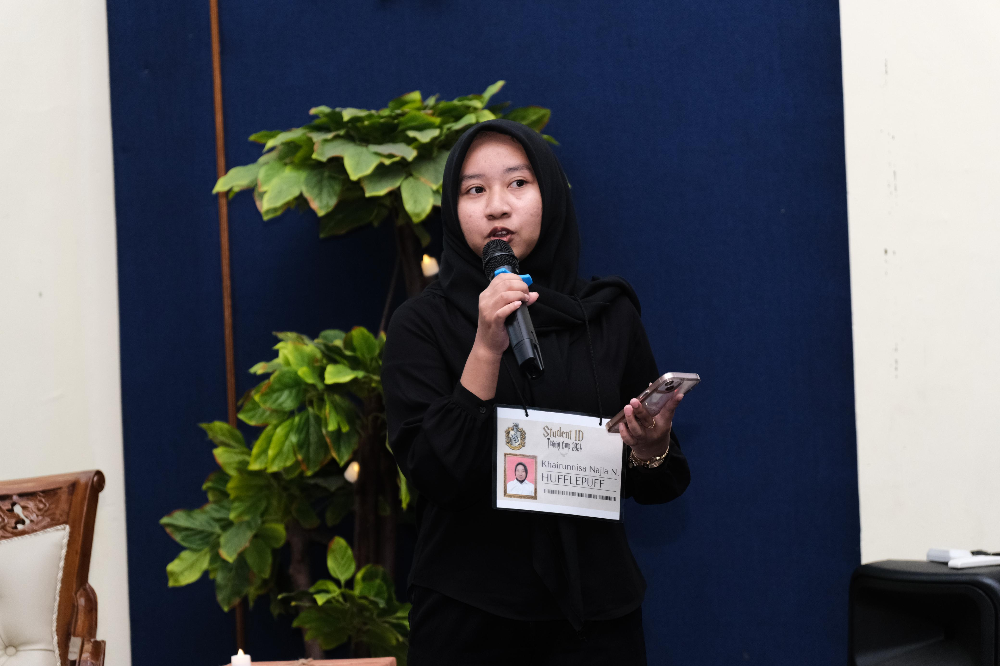
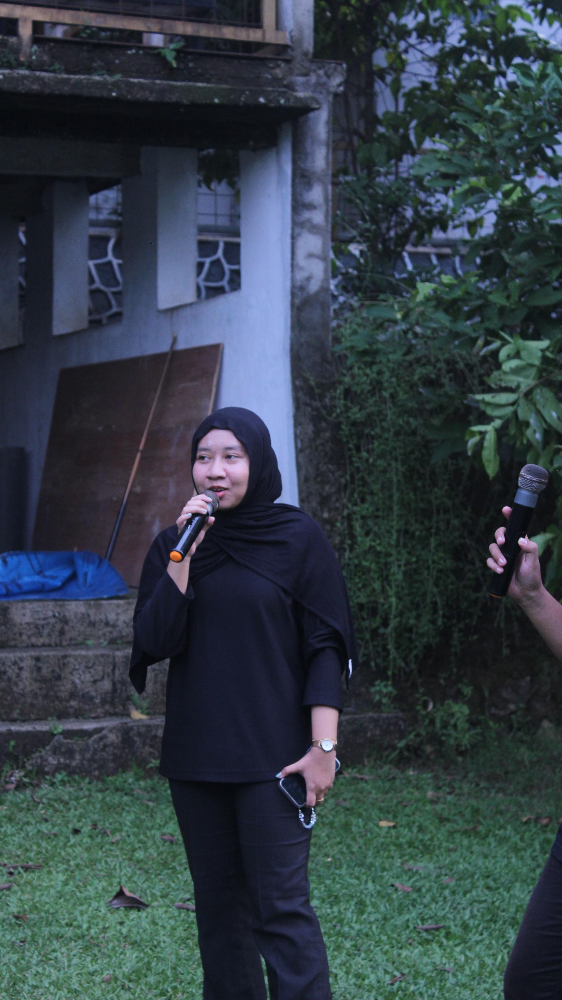
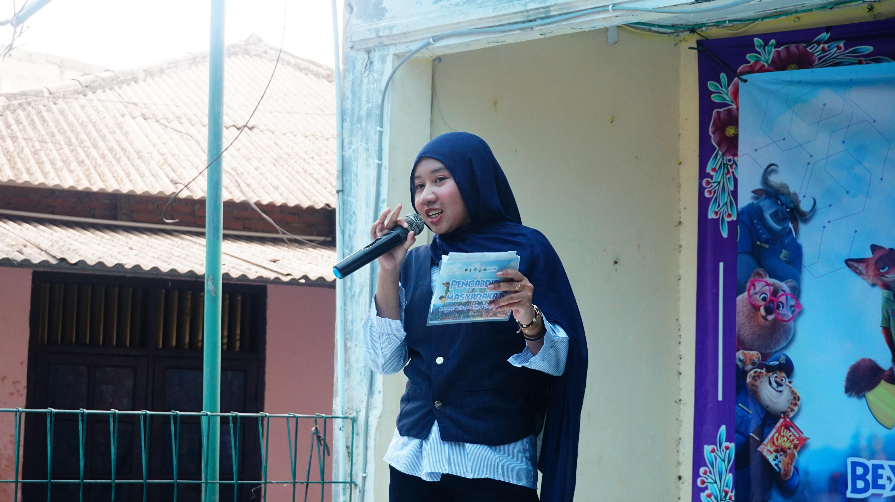
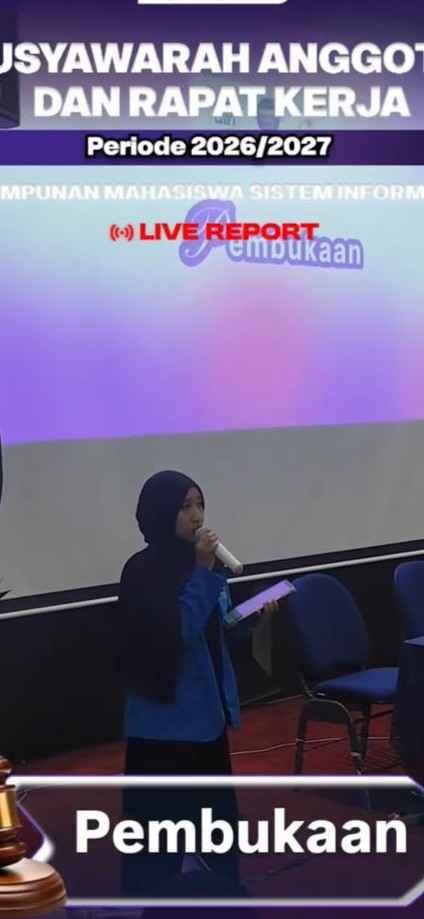
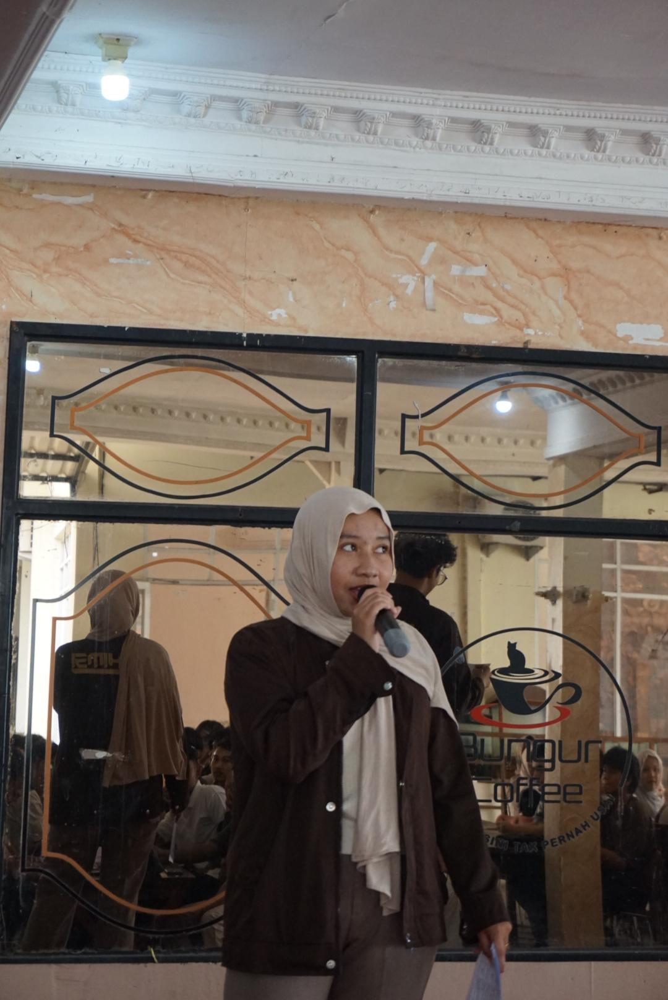
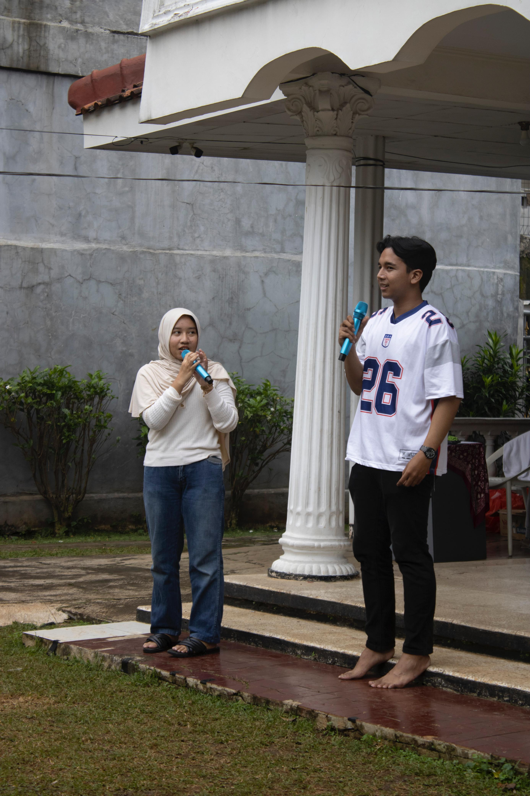
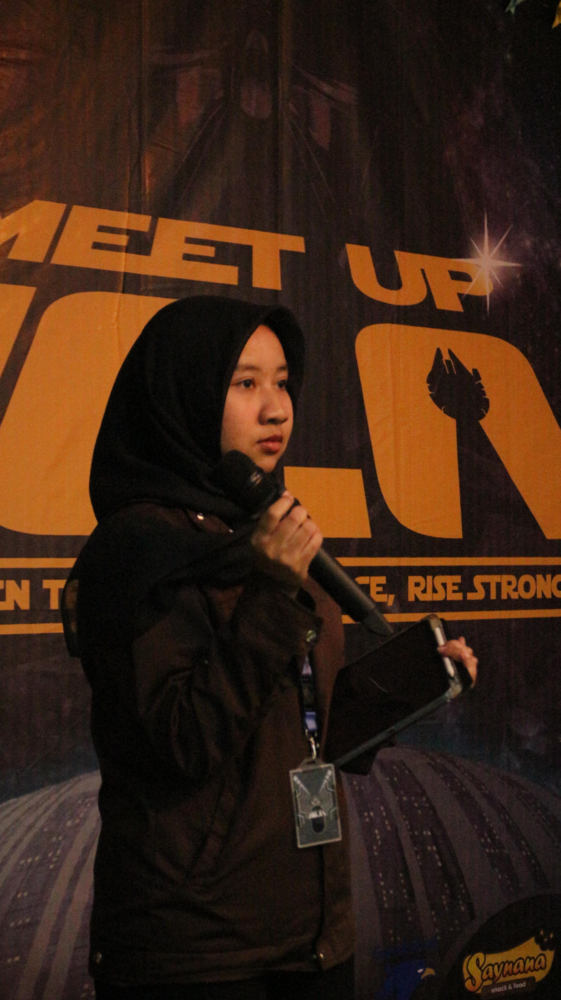
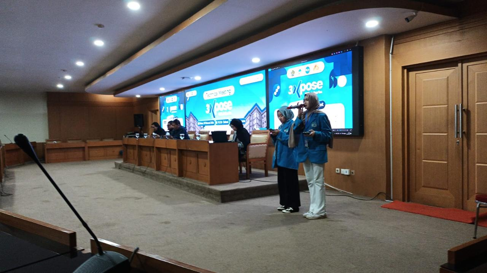
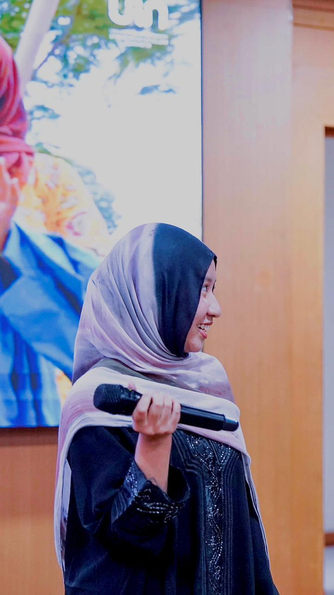

5+
Events Hosted
Formal & Non-Formal
Versatile Style
Interactive
Audience Engagement
Stage Experience
With a strong passion for public speaking, I have successfully hosted and guided the flow of various events. My ability to adapt my tone allows me to seamlessly transition between strict, formal academic protocols and vibrant, energetic non-formal campus festivals. I ensure the audience remains engaged, timelines are strictly met, and the overall atmosphere aligns perfectly with the event's core objective.
MC Documentation Showcase









×